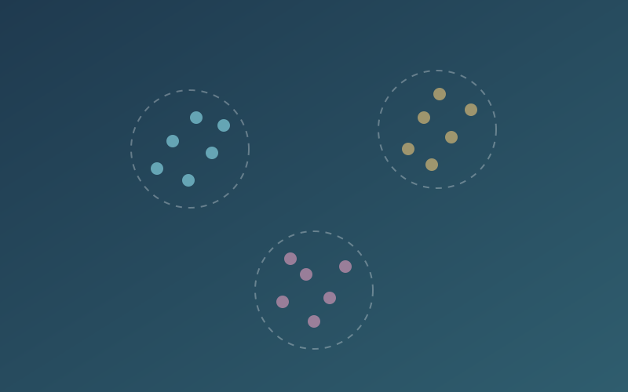

Learning Artefacts
Unit-by-unit evidence: readings, activities, wiki contributions and collaborative discussions
Unit-by-unit evidence: readings, activities, wiki contributions and collaborative discussions

Team and individual projects with evidence of my contributions

Reflections on machine learning, skills gained and knowledge acquired throughout the module
This e-portfolio documents my learning journey through the Machine Learning module, from the foundations of machine learning to the projects completed during the module.
It is organised unit by unit so that each stage of my development is backed by evidence, followed by the team and individual projects and a critical reflection on what I have learned.